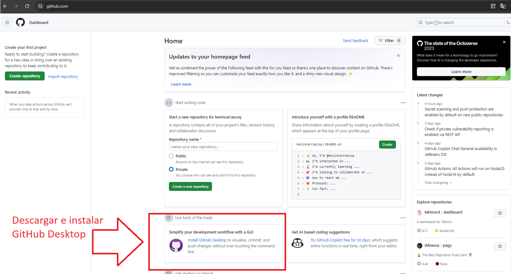
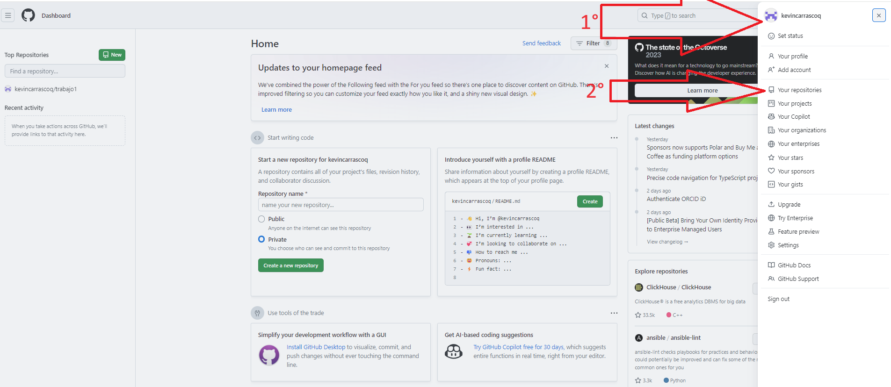
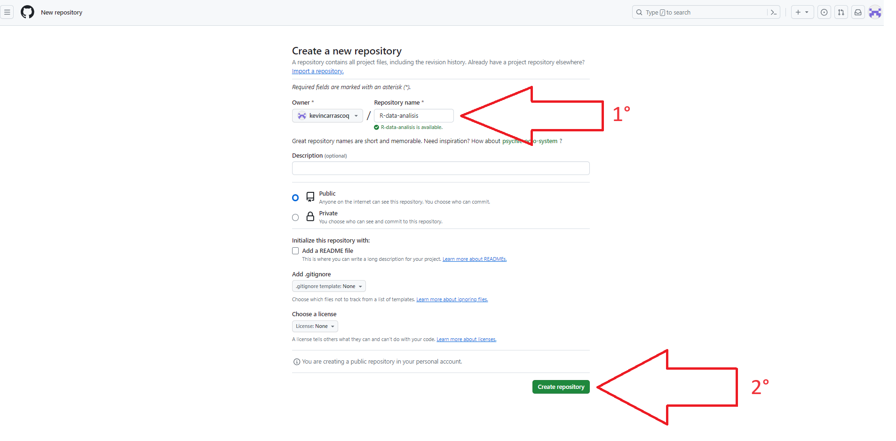
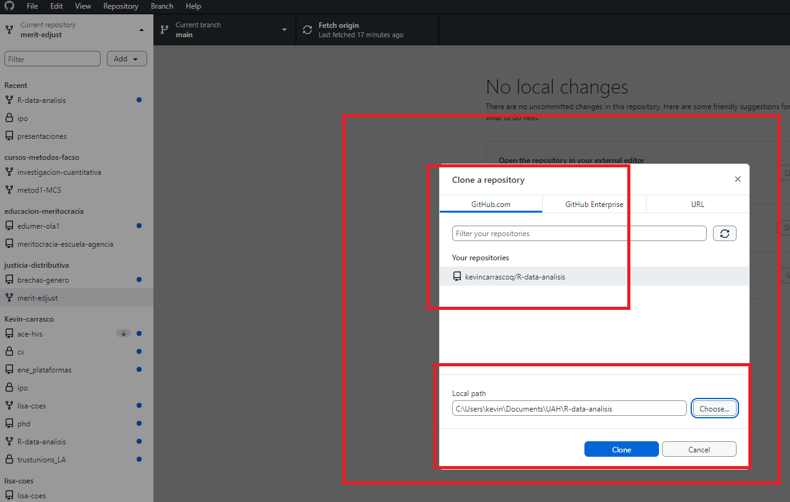
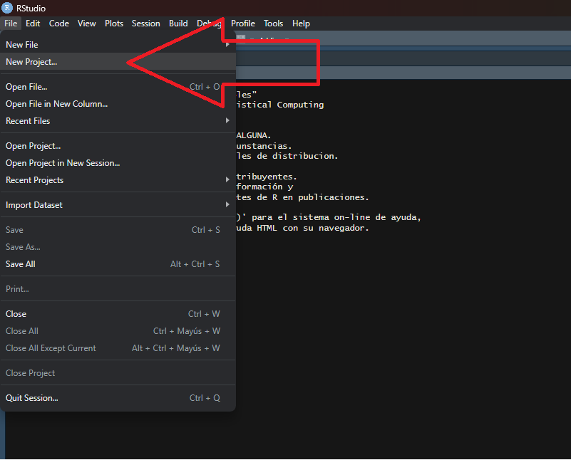
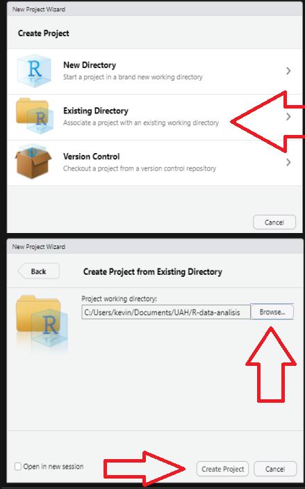
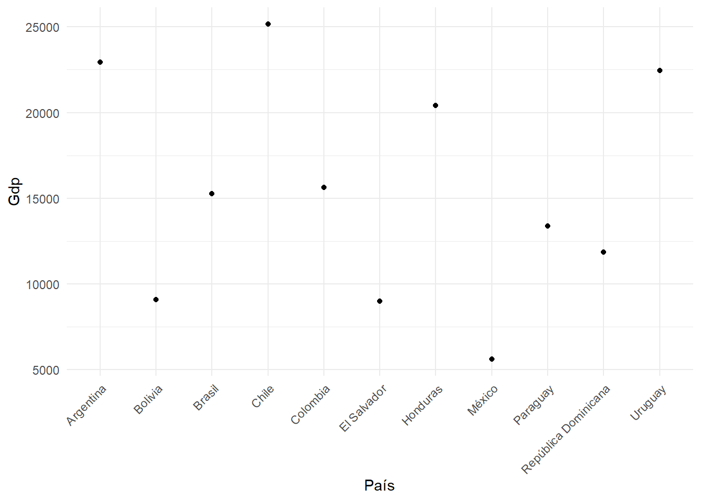
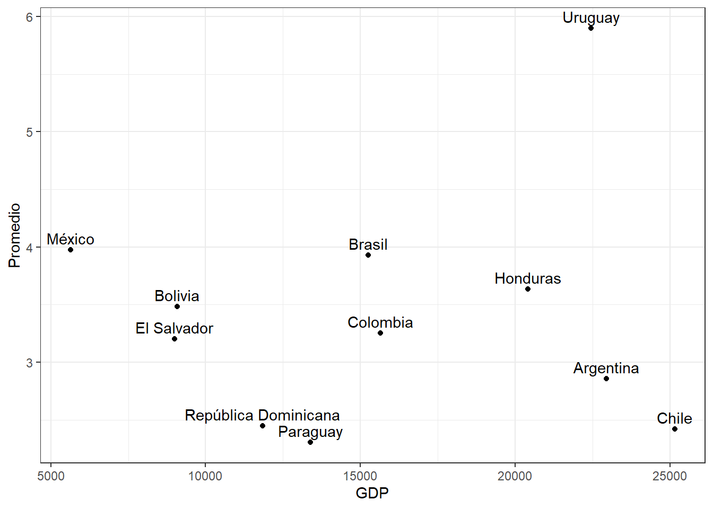

pacman::p_load(sjlabelled,
dplyr, #Manipulacion de datos
stargazer, #Tablas
sjmisc, # Tablas
summarytools, # Tablas
kableExtra, #Tablas
sjPlot, #Tablas y gráficos
corrplot, # Correlaciones
sessioninfo, # Información de la sesión de trabajo
ggplot2) # Para la mayoría de los gráficosIntroducción al flujo de investigación reproducible
1 Introducción al flujo de investigación reproducible
La presentación estará disponible en https://lisa-coes.github.io/presentaciones/escuela-elsoc-julio2024/escuela-elsoc-julio2024.html#1
Este taller estará disponible en https://lisa-coes.github.io/presentaciones/escuela-elsoc-julio2024/taller-elsoc-julio2024.html
1.1 Taller práctico
1.1.1 Prerequisitos
Crear cuenta en www.github.com
Descargar Github Desktop
2 Github
2.1 Descripción
Github es una plataforma de desarrollo colaborativo que permite alojar proyectos utilizando el sistema de control de versiones Git. Se utiliza principalmente para la creación de código fuente de programas (software).
Note
El 4 de junio de 2018 Microsoft compró GitHub por la cantidad de 7500 millones de dólares. Al inicio, el cambio de propietario generó preocupaciones y la salida de algunos proyectos de este sitio; sin embargo, no fueron representativos. GitHub continúa siendo la plataforma más importante de colaboración para proyectos de código abierto.
2.2 Repositorios
Un repositorio contiene todo el código, tus archivos y el historial de revisiones y cambios de cada uno de ellos. Es el elemento más básico de Github.
Los repositorios pueden contar con múltiples colaboradores y pueden ser públicos o privados.
2.3 Principales términos
| Término | Definición |
|---|---|
| Branch | Una versión paralela del código contenido en el repositorio, pero que no afecta a la rama principal. |
| Clonar | Para descargar una copia completa de los datos de un repositorio de GitHub.com, incluidas todas las versiones de cada archivo y carpeta. |
| Fork | Un nuevo repositorio que comparte la configuración de visibilidad y código con el repositorio «ascendente» original. |
| Merge | Para aplicar los cambios de una rama y en otra. |
| Pull request | Una solicitud para combinar los cambios de una branch en otra. |
| Remote | Un repositorio almacenado en GitHub, no en el equipo. |
| Upstream | La branch de un repositorio original que se ha forkeado o clonado. La branch correspondiente de la branch clonada o forkeada se denomina «descendente». |
2.4 Crear cuenta e instalación
- Acceder a la página de github
Registrarse ingresando correo electrónico y siguiendo los pasos siguientes (crear contraseña y nombre de usuario)

La personalización de la cuenta se puede saltar haciendo click en skip abajo de la selección de opciones
- Descargar e instalar Github Desktop

2.5 Crear repositorio
En la página principal de github hacer click en el ícono de usuario de la esquina superior derecha y luego ir a Tus repositorios

Una vez accedemos a Tus repositorios hacemos click en New/Nuevo

Luego le ponemos un nombre a nuestro repositorio, evitando siempre espacios, ñ y tíldes, y apretamos Crear repositorio

2.6 Github desktop
Una vez creado un repositorio, lo que nos interesa es descargarlo. Al abrir la aplicación de Github desktop por primera vez (descargada anteriormente), nos debería aparecer la opción de clonar nuestro repositorio R-data-analisis en la pantalla de inicio. Lo clonamos y seleccionamos una carpeta de nuestro computador para almacenarlo.
Para todas las siguientes veces, las instrucciones son estas:
1- Apretamos Repositorio actual en la esquina superior izquierda
2- Apretamos añadir
3- Apretamos clonar repositorio…

4- Seleccionamos nuestro repositorio
5- seleccionamos la carpeta donde se almacenará. Siempre evitando tener tíldes, ñ y espacios en la dirección de almacenamiento y apretamos ‘clone’.

6- Vamos al repositorio de LISA y descargamos el template de ipo. Link directo acá: https://github.com/lisa-coes/ipo/tree/master/IPO_template
7- Lo guardamos en la carpeta que creamos recién desde github desktop
2.7 RStudio Projects
- File -> New Project


2.8 Abriendo la sesión de RStudio como proyecto
identificar en la carpeta respectiva el archivo .Rproj
ejecutar y se abre R / RStudio desde ese directorio como raíz
2.9 Rutas relativas en código
forma de “señalar el camino” para abrir y guardar archivos al interior de una carpeta de proyecto autocontenido (= sin referencias locales)
este camino tiene básicamente 3 direcciones:
bajar -> hacia subcarpetas
subir -> hacia carpetas superiores
subir y bajar -> hacia otras subcarpetas
2.9.1 bajando
para “bajar” hacia a una subcarpeta, simplemente damos la ruta de la carpeta/archivo
ej: si estoy en el archivo paper.Rmd (directorio raíz), y quiero incluir una imagen (directorio input/images/imagen.jpg), entonces la ruta es
input/images/imagen.jpgo para señalar la ruta al bib desde paper.Rmd (en raíz):
input/bib/referencias.bib
2.9.2 subiendo
para subir se utilizan los caracteres
../por cada nivel.Ej: si quiero guardar una tabla en el directorio raíz generada desde un archivo de código en la subcarpeta proc, entonces la ruta es
../tabla.html
2.9.3 subiendo y bajando
combinación de las anteriores
Ej: para abrir la base de datos original en la subcarpeta input/data desde el código de procesamiento en la subcarpeta proc, entonces:
../input/data/original.dat
3 Quarto
La escritura en Quarto tiene algunos códigos o funciones, aquí un resumen de su mayoría:
| Código | Así se ve |
|---|---|
|
Algo de texto. Algo de texto en el párrafo. Siempre utilizando espacios para dividir párrafos |
*Cursivas* |
Cursivas |
**Negrita** |
Negrita |
# Título 1 |
4 Título 1 |
## Título 2 |
4.1 Título 2 |
### Título 3 |
4.1.1 Título 3 |
(puedes llegar hasta un título N° 6 con ######) |
|
[Texto enlace](https://quarto.org/) |
Texto enlace |
 |
|
> Citas |
|
|
|
|
|
- Abrimos nuestro Rproject y creamos un nuevo documento de Quarto file –> new file –> Quarto document


Note
YAML: Lenguaje de programación. Es un formato de serialización de datos que proporcionan un mecanismo de intercambio de datos legible por humanos. Dan formato a los datos de manera estandarizada para su intercambio entre aplicaciones de software.

---
title: "Mi Documento"
format:
html:
toc: true
number-sections: true
---Luego, podemos escribir en el documento, separando por títulos (#) cada sección. La jerarquía de los títulos se establece según la cantidad de ‘#’.
A continuación, en esta guía combinaremos el paso-a-paso de crear un documento dinámico con quarto, a la vez que vamos viendo distintas funciones de este proceso.
Por ejemplo, como hacer una nota al pie1. Para hacerlo, solo debemos escribir [ ^2] pero sin el espacio entre los corchetes. Luego, en otra línea escribimos [^2]: Esta es la nota al pie
5 Código de análisis de ejemplo
Para poder escribir código de análisis en un documento Quarto debemos generar trozo de código llamado ‘Chunk’, que se puede crear con ctrl+alt+i o directamente en el menú de arriba en ‘Code -> Insert Chunk’.

5.1 Cargar paquetes
5.2 Cargar bases de datos
Cargamos ambas bases de datos desde internet
load(url("https://github.com/Kevin-carrasco/R-data-analisis/raw/main/files/data/latinobarometro_total.RData")) #Cargar base de datos
load(url("https://github.com/Kevin-carrasco/R-data-analisis/raw/main/files/data/data_wvs.RData")) #Cargar base de datosPara trabajar con ambas bases, agruparemos las variables de interés por país, por lo que ya no trabajaremos directamente con individuos.
context_data <- wvs %>% group_by(B_COUNTRY) %>% # Agrupar por país
summarise(gdp = mean(GDPpercap1, na.rm = TRUE), # Promedio de GDP per capita
life_exp = mean(lifeexpect, na.rm = TRUE), # Promedio esperanza de vida
gini = mean(giniWB, na.rm = TRUE)) %>% # Promedio gini
rename(idenpa=B_COUNTRY) # Para poder vincular ambas bases, es necesario que la variable de identificación se llamen igual
context_data$idenpa <- as.numeric(context_data$idenpa) # Como era categórica, la dejamos numérica
proc_data <- proc_data %>% group_by(idenpa) %>% # agrupamos por país
summarise(promedio = mean(conf_inst, na.rm = TRUE)) # promedio de confianza en instituciones por país5.3 Unir bases de datos
Para vincular nuestras bases de datos existen múltiples opciones, la primera es ‘merge’ de R base y las siguientes tres vienen desde dplyr: ‘right_join’, ‘full_join’ y ‘left_join’. Cada una tiene sus propias potencialidades y limitaciones y dependerá de cada caso cuál usemos
5.3.1 Probemos merge
data <- merge(proc_data, context_data, by="idenpa")data <- data %>%
mutate(idenpa = as.character(idenpa)) %>%
mutate(idenpa = case_when(
idenpa == "32" ~ "Argentina",
idenpa == "68" ~ "Bolivia",
idenpa == "76" ~ "Brasil",
idenpa == "152" ~ "Chile",
idenpa == "170" ~ "Colombia",
idenpa == "188" ~ "Costa Rica",
idenpa == "214" ~ "Cuba",
idenpa == "218" ~ "República Dominicana",
idenpa == "222" ~ "Ecuador",
idenpa == "320" ~ "El Salvador",
idenpa == "340" ~ "Guatemala",
idenpa == "484" ~ "Honduras",
idenpa == "558" ~ "México",
idenpa == "591" ~ "Nicaragua",
idenpa == "600" ~ "Panamá",
idenpa == "604" ~ "Paraguay",
idenpa == "858" ~ "Uruguay",
idenpa == "862" ~ "Venezuela"))
data$gdp <- as.numeric(data$gdp)
data$gdp[data$gdp==0] <- NA
data <- na.omit(data)5.3.2 Guardamos esta nueva base en nuestra carpeta input
save(data, file="input/data/proc/data.RData")5.4 Visualizaciones
Podemos establecer referencias cruzadas para las tablas y gráficos dentro del texto, para poder automatizarlo, como ejemplo así, pero dentro del chunk:
#| label: tbl-sjmisc
#| tbl-cap: “Descriptivos con sjmisc”
5.4.1 Descriptivos
El Chunk se debería ver así:
#| label: tbl-sjmisc
#| tbl-cap: “Descriptivos con sjmisc”
sjmisc::descr(data,
show = c("label","range", "mean", "sd", "NA.prc", "n"))%>% # Selecciona estadísticos
kable(.,"markdown") # Esto es para que se vea bien en quartosjmisc::descr(data,
show = c("label","range", "mean", "sd", "NA.prc", "n"))%>% # Selecciona estadísticos
kable(.,"markdown") # Esto es para que se vea bien en quarto| var | label | n | NA.prc | mean | sd | range | |
|---|---|---|---|---|---|---|---|
| 4 | promedio | promedio | 11 | 0 | 3.40077 | 1.016976 | 3.59 (2.3-5.9) |
| 1 | gdp | gdp | 11 | 0 | 15528.18364 | 6480.045512 | 19523.79 (5631.2-25154.99) |
| 3 | life_exp | life_exp | 11 | 0 | 75.90909 | 2.286593 | 8.8 (71.24-80.04) |
| 2 | gini | gini | 11 | 0 | 45.46364 | 4.156266 | 14.2 (39.7-53.9) |
Luego de establecer el link y el nombre de la tabla, podemos referenciar acá con un @, así: @ tbl-sjmisc (pero junto), y que se vería así Table 1
5.4.2 Gráficos
Y para los gráficos se hace de la misma forma:
#| label: fig-gdp
#| fig-cap: “Plots”
graph1<-ggplot(data, aes(x = idenpa, y = gdp)) +
geom_point() +
labs(x = "País", y = "Gdp") +
theme_minimal()+
theme(axis.text.x = element_text(angle = 45, hjust = 1))
graph1

Sin embargo la Figure 1 entrega información desordenada. Mejor ordenar por tamaño de PIB que por orden alfabético de los países. Para eso
data_sorted <- data %>% arrange(desc(gdp))
graph2<-ggplot(data_sorted, aes(x = factor(idenpa, levels = idenpa), y = gdp)) +
geom_point() +
labs(x = "País", y = "GDP") +
theme_minimal() +
theme(axis.text.x = element_text(angle = 45, hjust = 1))
graph2
Ahora sí la Figure 2 muestra un gráfico más ordenado.
5.4.3 Guardamos este nuevo gráfico en la carpeta output
ggsave(graph2, file="output/graphs/graph2.png")Y comparar el promedio de confianza en instituciones según producto interno bruto por país?
data %>%
ggplot(aes(x = gdp, y = promedio, label = idenpa)) +
geom_point() +
geom_text(vjust = -0.5) +
labs(x = "GDP", y = "Promedio") +
theme_bw()

La Figure 3 muestra la relación que existe entre el producto interno bruto y la confianza en instituciones para los 18 países analizados. Es interesante comparar los casos de Chile y urugay, que al tener similar GDP, tienen un nivel de confianza en instituciones muy diferente.
- Luego renderizamos

y se debería ver así:
- Ahora que tenemos nuestra investigación podemos subirla a Github Pages a través de Github Desktop.
5.5 Github desktop

5.6 Github pages
Ahora podemos ver los documentos modificados en nuestro repositorio online de github.
- Vamos a settings

- Dentro de Settings vamos a Pages, luego ‘none’ y seleccionamos ‘main’. Luego apretamos Save

Luego de aproximadamente un minuto se actualiza la página y aparecerá un link en la parte superior, algo así como kevin-carrasco.github.io/ipo que es nuestra página principal de nuestro sitio web de github.
El link para llegar a nuestro documento renderizado de quarto sigue la estructura del repositorio:
kevin-carrasco.github.io/ipo/trabajo.html

Footnotes
Esta es la nota al pie↩︎